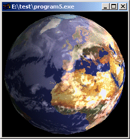

urce source source source source source source source source source source |
[program
five]
This example shows how to load 'real' file formats supported in popular
art packages.
We'll write a library of functions to support loading .tga images. These
can be 8-bit greyscale, 24 and 32-bit. The loader also supports compressed
.tga files. (NB. The .tga specification only allows compressed for
24, 32 and 8-bit paletted images - NOT 8-bit greyscale images)
The file, program5.cpp remains almost completely unchanged. We add another
variable for zooming with the right mouse button and change the initialisation
function to use our new texture loading library.

Lots of the code is devoted to parsing the different parts on the .tga format. Since this isn't the point of the tutorial, much of that won't be covered. The code is annotated quite well anyway.
This function
gets the compressed texture extension for us. We call wglGetProcAddress
to fetch the pointer of the
functions from the opengl driver. From now on when we call glCompressedTexImage2DARB
it'll use the correct
function.
If the pointer is still NULL
after this, its safe to assume that your driver doesn't support the extension.
[1] void tgaGetExtensions (
void )
[2] {
[3] glCompressedTexImage2DARB = ( PFNGLCOMPRESSEDTEXIMAGE2DARBPROC )
wglGetProcAddress ( "glCompressedTexImage2DARB" );
[4] glGetCompressedTexImageARB = ( PFNGLGETCOMPRESSEDTEXIMAGEARBPROC )
wglGetProcAddress ( "glGetCompressedTexImageARB" );
[5]
[6] if ( glCompressedTexImage2DARB == NULL ||
glGetCompressedTexImageARB == NULL )
[7] tgaCompressedTexSupport = false;
[8] }
We need a function to pass the image to OpenGL. Because we wanted our library to be flexible we have to perform quite a few checks to determine what kind of internal we're going to need. We do this by passing in the 'mode' and using switch statements to direct the program flow.
[1] void tgaUploadImage ( image_t *p, tgaFLAG mode )
[2] {
[3] GLenum internal_format = p->info.tgaColourType;
The first switch statement takes the mode variable and checks to see whether we want to upload the texture in a lower quality. So line 1 checks if we want to use low quality mode and line 3 starts the switch statement. We set the internal texture format to XXX4 (where XXX is RGB, RGBA, LUMINANCE or ALPHA). Be aware that the OpenGL spec. states that a driver can ignore these lower bit precision formats if hardware doesn't support them. The driver is allowed to make its own decision on this and use the closest format available.
[1] if ( mode&TGA_LOW_QUALITY )
[2] {
[3] switch ( p->info.tgaColourType )
[4] {
[5] case GL_RGB
: internal_format = GL_RGB4; break;
[6] case GL_RGBA
: internal_format = GL_RGBA4; break;
[7] case GL_LUMINANCE : internal_format = GL_LUMINANCE4;
break;
[8] case GL_ALPHA
: internal_format = GL_ALPHA4; break;
[9] }
[10] }
The second switch statement chooses the most appropriate compressed texture format. Line 1 checks if we wanted compressed textures with the mode variable and whether or not compressed textures are supported by the hardware. Again, the spec. states that OpenGL can do what it likes when confronted with these enumerants. If the driver does support compressed textures, it'll choose the format it thinks is best for the job.
[1]
if ( mode&TGA_COMPRESS && tgaCompressedTexSupport )
[2] {
[3] switch ( p->info.tgaColourType )
[4] {
[5] case GL_RGB
: internal_format = GL_COMPRESSED_RGB_ARB; break;
[6] case GL_RGBA
: internal_format = GL_COMPRESSED_RGBA_ARB; break;
[7] case GL_LUMINANCE : internal_format = GL_COMPRESSED_LUMINANCE_ARB;
break;
[8] case GL_ALPHA
: internal_format = GL_COMPRESSED_ALPHA_ARB; break;
[9] }
[10] }
Finally we check if wanted mipmaps and call either gluBuildMipmaps or glTexImage depending on the choice.
[1]
if ( !( mode&TGA_NO_MIPMAPS )) There isn't anything remarkable about the remaining
functions in 'tgaload.cpp'. So lets look at the program source itself.
[2] gluBuild2DMipmaps ( GL_TEXTURE_2D, internal_format, p->info.width,
p->info.height, p->info.tgaColourType, GL_UNSIGNED_BYTE, p->data );
[3] else
[4] glTexImage2D ( GL_TEXTURE_2D, 0, internal_format, p->info.width,
p->info.height, 0, p->info.tgaColourType, GL_UNSIGNED_BYTE, p->data );
[5]}
In the initialisation function we call our .tga loader. Notice how we use
...
[1] glBindTexture ( GL_TEXTURE_2D, texture_id [ EARTH_IMAGE ] );
[2] tgaLoad ( "earth.tga", &temp_image,
TGA_FREE );
[3]
[4] glBindTexture ( GL_TEXTURE_2D, texture_id [ CLOUD_IMAGE ] );
[5] tgaLoad ( "clouds.tga", &temp_image,
TGA_FREE | TGA_LUMINANCE
);
...
If you're feeling particularly lazy you can call the function tgaLoadAndBind. This performs the glBindTexture command internally and doesn't require an external image_t variable. It's been commented out in the source, for reference you use it like this:
texture_id [ EARTH_IMAGE ] = tgaLoadAndBind ( "earth.tga", TGA_DEFAULT );
Note that the texture_id array is just like the previous version, the bound texture name is placed in the position pointed to by the index 'EARTH_IMAGE'. LoadAndBind frees the image automatically, so we use the blank bitfield 'TGA_DEFAULT' to stop the compiler complaining.
Website and
content, Paul Groves